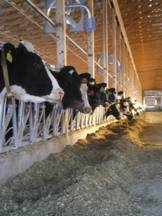
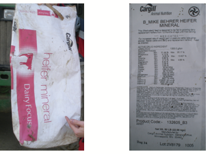
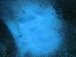
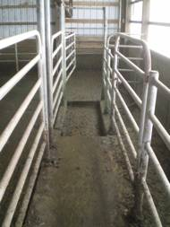
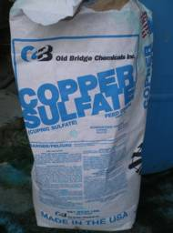
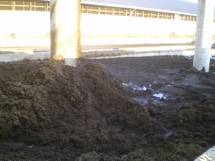
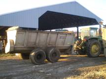
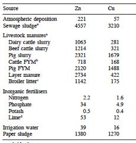

Trace Mineral Supplements in Dairy Cattle Feed:
Nutritional Advantages and Environmental Detriments
The agriculture industry is one of the most important in the United States and even the world. To keep up with the population, dairy farmers are trying to improve efficiency without increased expenses. This is an ongoing challenge. Dairy farms produce the nations milk that will be processed into a variety of dairy products. Low milk price and poor production can be detrimental to a farm. As you might imagine, high milk production and reproduction of the heard are key to having a profitable operation. To improve the milk production of the heard, a balanced diet is essential. Trace mineral supplements are provided in the daily diet of the animal. The National Research Council (NRC) has established recommended doses of elements key to the biological function of dairy cattle (1).

Figure 1: Dairy cows at Willow Behrer Farm, Spruce Creek, PA
The elements are not only essential for common biological processes, but can also improve herd health and efficiency. Research has shown that minerals can improve fertility, decrease infections, prevent lameness, and increase milk production.
In most cases, trace elements in the body are only partially absorbed. Some of the elements have a poor bioavailability and the unabsorbed are excreted in the manure or urine. The animal waste is spread on farmland as a fertilizer. Trace metals can accumulate in the soil and cause environmental problems. Water contamination and plant toxicity are common detriments associated with a high concentration of metals.
Biochemistry of mineral supplements
Trace elements such as copper, zinc, manganese, iron, and cobalt are known to be essential to the health of ruminants. Figure 1 shows an example of heifer mineral given to dairy heifers and a label with the ingredients. Each of the metals has a different biological function. Minerals have important roles in protein synthesis, vitamin metabolism, formation of connective tissue, and immune function (1). The roles of the metals can be catalytic to trigger specific chemical reactions, structural to stabilize protein structure, and regulatory (1, 3). For example, zinc is essential for many enzyme functions such as superoxide dismutase, which removes reactive oxygen species (free radicals). Cobalt is necessary for vitamin B12 synthesis in the rumen of dairy cows. Copper is essential for enzymes in the electron transoprt chain. Proteins hemoglobin and myoglobin require iron for oxygen transport (1).
The bioavailability of the metals varies. Four percent of copper is absorbed by the dairy cow, 12-15% zinc, 80-90% cobalt, 10% iron, and 0.75% manganese is taken-up by cells. To be sure that animals have sufficient amounts of the metals, they are supplemented at higher concentrations (1).

Figure 2: Heifer mineral bag and label showing ingredients.
Organic trace minerals are becoming a larger part of mineral nutrition. The organic metal chelates have increased bioavailability and are similar to the forms that occur in the body. Chelating ligands protect the metal from other interaction in the digestive system that inhibit absorption. These factors allow for a greater absorption of the mineral (1).
Common chelating ligands are several of the amino acids. Zinc methionine, zinc lysine, manganese methionine, iron methionine, and copper lysine are known metal amino acid complexes. The most investigated of which is zinc methionine.
Complexed minerals in general have led to increased fertility, milk production, lameness, and incidence of mastitis (a bacterial infection of the mammary gland) (1). Relative bioavailability of manganese from manganese methionine was 120% when compared to the sulfate form (5).
Benefits of the farmer
Dairy farmers strive to increase milk production and production of calves. Dairy cows go through a cycle of insemination, pregnancy, birth, and lactation. The cycle often requires a period of 12 to 16 months. It is not uncommon for cows to go through 10 or more lactations. However, there are often problems that can result in removal from the herd. These issues include: infertility, mastitis, lameness, and poor production (6).
Reproductive efficiency is crucial to the profitability of a dairy farm. The cost incurred for each day the cow remains open beyond 90 days of lactation is between $0.50 and $4.00. Metals such as zinc, copper, and manganese aid in returning the cow to a regular estrus cycle after calving. Metal complexes have shown to decrease the calving to conception interval by 23 days (7).
Lameness is another area that research has shown to be improved by trace minerals. Zinc and copper help to strengthen foot tissue and improve cell immunity. Lameness is usually a result of poor foot health leading to decreased mobility. A lack in mobility will lead to fewer trips to the feed bunk, and subsequent weight loss and decreased milk production. Cows that become lame are estimated to produce as much as 36% less milk and increase their calving to conception interval by 28 days. It is estimated that 15% of cows are culled due to lameness. Each case of lameness can cost the dairy farmer approximately $302 annually. Preventing or improving lameness can increase other qualities such as fertility and milk production (8).
Mastitis, as mentioned, is caused by bacteria that infect the mammary gland. Trace minerals can decrease the occurrence of this infection. The improved quality of milk will be more profitable to the farmer. Good skin condition can prevent mastitis. Damaged skin, such as areas that are “stepped on,” frostbitten, sunburned, or chapped provides areas for bacteria to colonize on the surface of the teat. These bacteria are in proximity to enter the udder (9).
Somatic cell count (SCC) in the milk can be an indication of infection. The somatic cells are immune cells that are produced to fight off bacteria. They are sent to areas where they will target invading cells. A low somatic cell count is good, because there are less bacteria and infection present. Zinc can contribute to lowering the SCC by maintaining sufficient keratin production to stop bacteria from entering the udder. It was found that the SCC in milk of cows was reduced by 33 percent. This was determined from a summary of 12 studies. The average decrease was 98,000 cells/mL (9).
Milk production can be increased as a result of improved overall health. Decreasing lameness and mastitis will have a positive effect on milk produced. The quality of milk will also be higher. The milk protein and fat content have been shown to increase with sufficient trace metals in the diet. The average of several studies show a daily increase of 1 kg/day. While this may not seem like much, multiplied across the entire herd can lead to a significant increase in milk production (9).
The use of copper sulfate in footbaths has become a regular occurrence on farms over the past 10 years (10). Figure 3 shows a footbath and copper sulfate powder used to prepare an aqueous solution. The antimicrobial properties of copper help to prevent foot sores such as warts and foot rot. These foot problems can lead to lameness in a cow. Typically, a 10% solution of copper sulfate is used two to three times per week to prevent foot injuries.
 
Figure 3: Empty footbath (left) and copper sulfate (right) at Seven Stars Farm, Spruce Creek, PA
Impact on the environment
Trace minerals have been shown to improve the health and production of dairy cattle. However, with the bioavailability of most of the elements, one can only wonder what is happening to the excess metals. The body excretes the excess metals in the feces and urine. Figure 4 shows a picture of dairy cattle manure and a spreader that is used to apply the waste on the land. The manure is spread onto farmland and can eventually cause several problems. Phytotoxicity and water contamination are of the most concerning.

Figure 4: Manure shown on the left will be spread onto farmland using the manure spreader shown on the right.
Most environmental concerns regarding land application of manure are focused on nitrogen and phosphorus. There are also significant quantities of metals in the agricultural waste (11). It is estimated that 25-40% of total annual Cu and Zn concentrations in England and Whales can be attributed to livestock manures (12). Sewage sludge application and heavy metal content has been investigated, however, little work has focused on the input of metals from agricultural waste. The U.S. Environmental Protection Agency has set a maximum allowable metal loading rate of sewage sludge not to exceed 1500 kg/ha of copper and 2800 kg/ha of zinc. Once that limit is reached, no further waste may be applied. There is no such limit for agricultural manures (13).
Copper and zinc are of the highly concerning because they are utilized most abundantly. The waste from copper sulfate footbaths also poses a large environmental concern. Table 1 shows the addition rates of copper and zinc to agricultural land in England and Whales from different sources. Livestock manures are a significant source of those two metals (12).
Table 1: Copper and zinc addition rates (g/ha/yr) to agricultural land in England and Whales from different sources (12).

The application rate may seem small, but yearly accumulation can lead to gradually increasing concentrations. Repeated applications of manure to land have resulted in increased metal concentration in soils. These metals are subject to adsorption, complexation, reduction, leaching, and surface run-off. Increasing the amount of organic material in the soil through manure addition enhances the retention of metal cations. However, when these metals migrate to lower depths in the soil, there are oxidation-reduction reactions that can take place to make the metal more soluble (11). Table 2 contains data showing the time it would take for copper and zinc levels to reach limit concentrations. From agricultural sources it would take 130 years to reach the zinc limit and 794 years to reach the copper limit on the studied land (12).
Table 2: Time (years) required to raise soil zinc and copper concentrations to limit concentrations (12).

The Miner Institute in Chazy, New York estimates that 4 to 16 pounds of copper sulfate is applied per acre per year. The New York State Department of Environmental Conservation has set a lifetime load limit of copper at 74 pounds per acre. A field could reach the maximum copper load in 4.5 to 19 years at that high rate of application (14)!
Most agronomic crops contain copper in the range of 5-30 ppm. Crops can absorb approximately ½ pound of copper per acre. Gradual application of less than two pounds per year is unlikely to reach toxic levels quickly (15). Research is underway to investigate the phytotoxicity of copper and zinc to plants. A reduced yield has been documented for various types of grasses and corn after application of copper to soil (12).
Future directions
Trace mineral supplements have their benefits to the dairy industry, but do they outweigh the environmental detriments? Now is the time to investigate other means of supplementation and control the metal input into the environment. Once we reach levels detrimental to the public and plant and animal health, there is no practical way to go back.
Organic forms of trace minerals are being investigated and are more bio-available to the cow. The increased bioavailability of the metals to the animal results in a higher absorption coefficient, therefore, decreasing the amount of metals being excreted in the manure. The Zinpro Corporation markets amino acid complexes that have been shown to improve fertility, milk production, lameness, and mastitis over inorganic metal supplements (7, 8, 9).
Reevaluation of copper sulfate footbaths is important to control the copper application to the land. Reducing the concentration of the copper sulfate bath to 5% rather than 10% can cut the amount of copper in half that is applied to farmland. In addition, the frequency of copper sulfate footbaths can be decreased.
(1) National Research Council. Nutrient requirements for dairy cattle. 2001
(2) Griffiths, L. M., Loeffler, S. H., Socha, M. T., Tomlinson, D. J., and Johnson, A. B. Effects of supplementing complexed zinc, manganese, copper, and cobalt on lactation and reproductive perfomance of intensively grazed lactating dairy cattle on the South Island of New Zealand. Animal Feed Science and Technology, 137. (2007):69-83.
(3) Higdon, J. Micronutrient Information Center.
< http://lpi.oregonstate.edu/infocenter/minerals/zinc/> Accessed December 2, 2008.
(4) Spears J. W. Organic trace minerals in ruminant nutrition. Animal Feed Science and Technology, 58 (1996):151-163.
(5) Spears, J. W. Trace mineral bioavailability in ruminants. The Journal of Nutrition. 2003. 1506S-1509S.
(6) Houck, Brian. Owner, Seven Stars Farm, Spruce Creek, PA. Personal communication, 2008.
(7) Socha, M and Tomlinson, D. Zinpro performance minerals on reproductive performance. <http://test2.zinpro.com/ASPX_Main/en/pdf/Articles/Repro.pdf> Accessed December 2, 2008.
(8) Socha, M. and Tomlinson, D. Proper trace mineral supplementation reduces lameness in dairy cattle. <http://www.availa4.com/technical/pdf/Article-Lameness.pdf> Accessed December 2, 2008.
(9) Socha, M. and Tomlinson, D. Improving mastitis management through trace mineral nutrition. <http://www.availa4.com/technical/pdf/Article-Mastitis.pdf> Accessed December 2, 2008.
(10) Flis, S. A., Thomas, E. D., Ballard, C. S., Dann, H. M., and Cotanch, K. W. The effect of CuSO4 from dairy manure on the growth, and composition of cool season forage grasses and corn. Northern NY Agricultural Development Program 2005-2006 Project Report. http://www.nnyagdev.org/PDF/NNYADPReport3-0copper2006.pdf> Accessed December 2, 2008.
(11) Bolan, N. S., Adriano, D. C., and Mahimairaja, S. Distribution and bioavailability of trace elements in livestock and poultry manure byproducts. Critical Reviews in Environmental Science and Technology, 34. (2004):291-338.
(12) Nicholson, F. A., Smith, S. R., Alloway, B. J., Carlton-Smith, C., and Chambers, B. J. An inventory of heavy metals inputs to agricultural soils in England and Whales. The Science of the Total Environment, 311. (2003):205-219.
(13) Brock, E. H., Ketterings, Q. M., and McBride, M. Copper and zinc accumulation in poultry and dairy manure-ammended fields. Soil Science, 171(5). May 2006:388-399.
(14) Dunn, K. Study probes how cow foot baths reduce crops and contribute to fields' copper loads. <http://www.news.cornell.edu/stories/July06/copper.cows.kd.html> Accessed December 2, 2008.
(15) Stehouwer, R. and Roth, G. Copper sulfate hoof baths and copper toxicity in soil. <http://das.psu.edu/news/copper-sulfate-hoof-baths-and-copper-toxicity-in/?searchterm=copper%20sulfate> Accessed December 2, 2008.
Author: Joseph Houck
- Alzheimer's 1 2
- Antibiotics
- Antifouling Paint
- Arthritis
- Ayurvedic Medicine
- Breast Feeding
- Cancer Therapy
- Cattle Feed
- Cerebral Ischemia
- Chelation Therapy
- Chernobyl
- Chicken Feed
- Chocolate
- Cigarettes
- Coal 1 2
- Copper Mining
- Cremation
- Diabetes
- Electronic Waste
- Hat Making
- Hard Metal Disease
- Hybrid Cars
- Imaging 1 2 3 4
- Industrial Pollution
- Jewelry Allergy
- Lead Poisoning
- Lewisite
- Magnetic Particles
- Makeup
- Mountain Top Removal
- MRI Imaging
- Neurotoxicity
- Nuclear Power
- Nuclear Weapons
- Ouch Ouch Disease
- Peripheral Neuropathy
- PET Imaging
- Photodynamic Therapy
- Phytoremediation
- Pregnancy
- Radioactivity 1 2
- Seafood
- Sunscreens
- Tattoos
- Vaccines
- Wound Healing